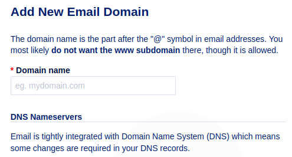
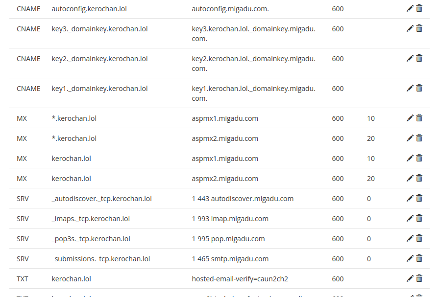
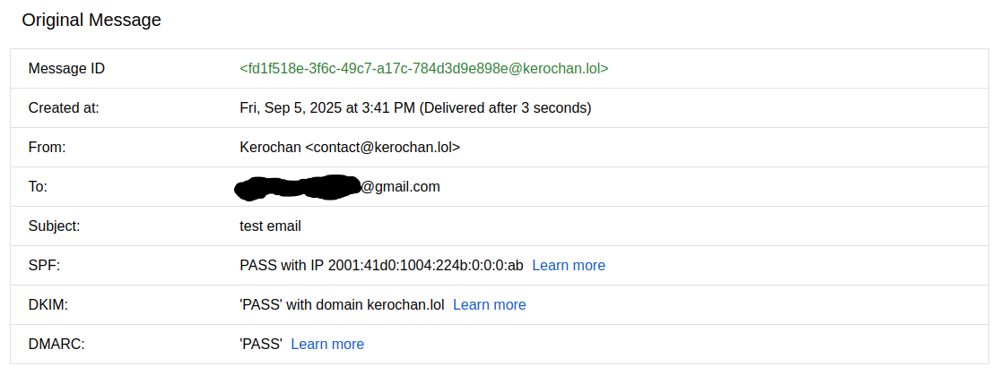
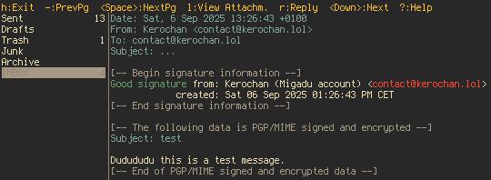

Setting Up Biz Email With Privacy + Custom Domain
Problem
It's pretty common to see the "easy" Gmail being used by almost everyone including businesses. But both the data and deliverability aren't yours, and you might even lack your brand-related domain name on your email along with portability as well.
Solution
We'll be using the privacy-respecting Migadu as our host with kerochan.lol as our custom domain in this example (which is already used in my own site, as you can see), but also add some auth with SFP+DKIM+DMARC, integrity (PGP-signed mail), and security (DNSSEC).
Let's assume we're running a Debian system, own a domain name (assume it's kerochan.lol), and have a Migadu account. Let's install the prereqs:
sudo apt install -y gnupg2 dig
Now we go to the Migadu Dashboard and add a domain:

Then we'll copy exact DNS records from Migadu in the next step. It's simple copy-pasting really as the Dashboard would show you everything to do there.
We'll be adding DNS records to our domain registrar (e.g., Porkbun) from the Migadu Dashboard, mainly MX (mail routing), SPF (who can send), DKIM (cryptographic signing), and DMARC (for reporting, optional but recommended).

After we save our changes and DNS propagates in a few minutes or so, we verify from the terminal:
lain@navi:~$ dig +short MX kerochan.lol dig +short TXT kerochan.lol dig +short TXT _dmarc.kerochan.lol # if DMARC added dig +short s1._domainkey.kerochan.lol TXT dig +short s1._domainkey.kerochan.lol CNAME 10 aspmx1.migadu.com. 20 aspmx2.migadu.com. "hosted-email-verify=caun2ch2" "v=spf1 include:spf.migadu.com -all" "v=DMARC1; p=quarantine;"
We can then also enable DNSSEC for kerochan.lol in our DNS provider, which generates a DS record. We paste that DS in our registrar (if using external DNS), and verify:
lain@navi:~$ dig +dnssec kerochan.lol DS ; <<>> DiG 9.18.33-1~deb12u2-Debian <<>> +dnssec kerochan.lol DS ;; global options: +cmd ;; Got answer: ;; ->>HEADER<<- opcode: QUERY, status: NOERROR, id: 17380 ;; flags: qr rd ra ad; QUERY: 1, ANSWER: 0, AUTHORITY: 4, ADDITIONAL: 1 ;; OPT PSEUDOSECTION: ; EDNS: version: 0, flags: do; udp: 1232 ;; QUESTION SECTION: ;kerochan.lol. IN DS ;; AUTHORITY SECTION: lol. 900 IN SOA ns0.centralnic.net. hostmaster.centralnic.net. 1757082140 900 1800 6048000 3600 kerochan.lol. 900 IN NSEC keroisrealgold.lol. NS RRSIG NSEC lol. 900 IN RRSIG SOA 13 1 900 20251005142220 20250905125220 26505 lol. i8Amdxo5YUY0FIj9mmSWmvVFTpZZiB4t/ITeuu2aiOLitvq1ZNbCbGpB iAnKX7zaWC4Cu84K2e5kQWw+Z1ClEQ== kerochan.lol. 900 IN RRSIG NSEC 13 2 900 20250915114757 20250816101757 26505 lol. a6wlxpKRyV2Ar5NHiSMlhubXXg49lLjzWYd4fjuTI9dWgXMhIrc5bVkl uh9iMqjqeDprTdEUy0W/DedQMn/U/w== ;; Query time: 60 msec ;; SERVER: 10.2.0.1#53(10.2.0.1) (UDP) ;; WHEN: Fri Sep 05 15:23:35 CET 2025 ;; MSG SIZE rcvd: 344
Now we can set up our mail client and send a test. We'll use the simple and open-source Thunderbird (or NeoMutt) for this:
To add an account, use Migadu's IMAP imap.migadu.com:993 and SMTP smtp.migadu.com:465, set SSL/TLS for security, and keep authentication as "Normal password". Then we can finally send an plain text email from such new account me made (contact<at>kerochan<dot>lol) to a non-Migadu address we control.

We'll then generate a modern ECC key to support encryption and to sign our emails:
# Primary key (sign/certify), 1-year expiry: gpg --quick-generate-key "contact@kerochan.lol" ed25519 sign 1y # Add encryption subkey: gpg --quick-add-key contact@kerochan.lol cv25519 encrypt 1y # Export public key to share: gpg --armor --export contact@kerochan.lol > pubkey.asc # Create a revocation certificate and store it offline: gpg --output revoke-contact.asc --gen-revoke contact@kerochan.lol
Back to Thunderbird, we'll go to Account Settings -> End-to-End Encryption -> Add Key -> Use my existing key -> and pick the one you just made. Also check "Digitally sign messages by default".
Finally, we test it by sending an email to ourselves. Here's the result (I've set it up on NeoMutt):

Optionally, we can also add our key via WKD to let clients auto-discover the key at https://kerochan.lol/.well-known/openpgpkey/<some-hash>. But it's out of scope in this blog post; a tutorial on setting it up can be found here.